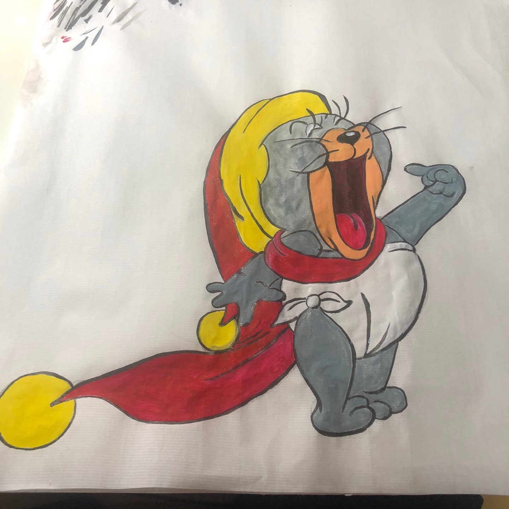

종원
html
CSS
javaScript
HTML이란 무엇인가?
오늘 나는 재밌는
코딩을
처음
배워보는
날이야. strong이라는 태그는 진하게 표시해야한다는 것을 설명해주는거야.
00중요한게 무조건 어려운게 아니야
this is jong won 지금부터 아무말이나 사용할건데 그것은 단락을 만들기 위해서야 br태그는 줄바꿈이고 p태그는 단락을 만드는 거야~ 7 